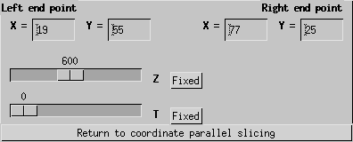

This file discusses the procedures for
creating arbitrary slices through your data.

Procedures:
- It is first necessary to create a 2-D plot.
- Once you have created a plot, use the mouse slicing option to select your
arbitrary line through the two dimentions. This will cause the
Arbitrary Slicer Widget to appear.
- At the Arbitrary Slicer Widget, "fix", "average" or free the
two coordinates that do not define your arbitrary line. Fixing both
of these results in a line plot, while keeping one free results in
a 2D plot along the arbitrary lina and the free dimention.
- To alter the arbitrary line, change the numbers for the left
and right end points of the line.

Arbitrary Slicer Widget
back to index